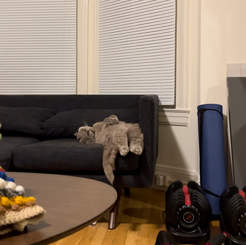

Ernesto's top 5's
Top five pics of my cat
-
- My cat with his paws tucked into a sandal
-
- My cat mid yawn
-
- My cat curled up sleeping under a sign that says "fragile handle with care"
-
- My cat sleeping on his stomach
- 
- My cat sleeping on the couch looking funny with this legs hanging over